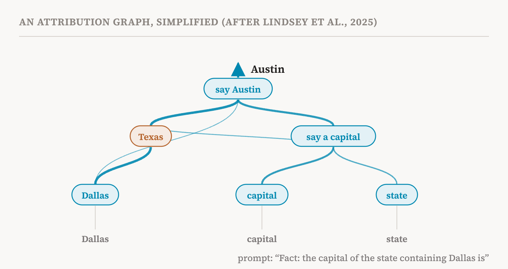
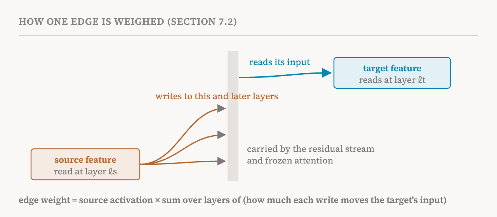

Part 16's methods find circuits inside the model itself. Their nodes are the model's own components, such as attention heads and MLP blocks, and those are mostly not understandable on their own. Saying that "head 9.6 and the MLP in layer 20 matter" is a location, not yet an explanation. This part covers section 7.2 of the book (pages 55–57), which describes a complementary approach: first build a more interpretable replacement model that approximates the original's computation with sparse linear features, then find circuits inside that.
Circuit Tracer
The best-known version, which the book calls Circuit Tracer, comes from a 2025 study by Anthropic researchers and uses the cross-layer transcoders of part 13. It replaces every MLP in the model with a CLT, while keeping the model's own attention and residual stream. Recall from part 13 that, for a single prompt, this local replacement model can be made to match the original model's activations exactly, by freezing attention and normalisation and adding error terms. The result is a prompt-specific attribution graph whose main internal nodes are sparse CLT features rather than whole MLP blocks or attention heads.
Each feature can then be given a description in words by the automated labelling pipelines that part 33 discusses. So, instead of a graph of numbered components, a person reading the circuit sees a graph of concepts.

The example in the figure comes from a 2025 study that applied the method to Claude 3.5 Haiku, and that the book cites among its examples of query-level circuits. Asked to complete "Fact: the capital of the state containing Dallas is", the model answers "Austin". The attribution graph shows a "Texas" feature active in the middle of the computation, fed by "Dallas" and feeding into "say Austin". The model never writes the word Texas, but the graph shows it taking that intermediate step: a two-step lookup from city to state to capital.
How an edge is weighed
The book gives the formula for the strength of an edge, and its parts are worth knowing even without the mathematics. Take a source feature, active at some position and layer with some strength, and a target feature at a later layer. Three things connect them.
First, the source feature writes. As part 13 described, a CLT feature writes into the reconstructed MLP output of its own layer and of every later layer, through a separate decoder vector for each. Second, those writes travel. A vector added at one layer and position moves through the residual stream, and through attention to other positions, until it reaches the target's input. The book describes this with a Jacobian: a table of numbers saying how a small change written at one place changes the input at another. Third, the target reads, through its encoder vector, which picks out the part of its input that it responds to.
The edge's weight is the source's activation multiplied, for each layer it writes to, by how much that write ends up moving the target's input, summed over all those layers. One more detail matters. The method freezes attention patterns and normalisation, and stops the gradients that would flow through intermediate MLP outputs. As a result, each edge captures the direct influence of one feature on another, not influence that travels through some third feature. Those indirect routes appear in the graph as chains of direct edges.

What is different about these circuits
The book points out two differences from the circuits of part 16. First, the nodes are fine-grained linear features, not coarse MLP blocks or attention modules, and with automated descriptions people can follow the mechanism much more easily. Second, an edge means something different. In EAP and its relatives, an edge's score compares a clean run with a corrupted one. In Circuit Tracer, an edge is the direct, input-specific influence between two features on this one prompt, adding up everything the source writes that reaches the target.
Because it produces one sparse graph per prompt describing which features are active and how they interact, the method suits query-level circuit discovery. Platforms such as Neuronpedia offer interactive versions, where readers can explore attribution graphs for open models themselves.
The limits
The book names two limitations, and the caveats of part 13 apply as well. First, CLTs only approximate the MLPs' computation, so the discovered circuit may cover only part of the model's real mechanism. The error terms that make the local replacement exact are, by definition, the part the features do not explain. Second, feature-level graphs can have very many nodes and edges. They have to be pruned, clustered or otherwise condensed before a person can understand them, and those simplifications are choices made by the analyst.
To these, part 13 adds the assumptions behind the linear picture: attention is treated as fixed routing rather than explained, normalisation is cached, and MLP computations are assumed to be sparse and linear. Part 15 added one hopeful note: models trained to have sparser attention produce attribution graphs with fewer intermediate components, which makes them easier to read.
Where this leaves us
Circuit Tracer gives the most readable circuits so far. It turns a model's computation on one prompt into a graph of named concepts, and it can reveal steps the model never states. But it is a picture of a replacement model, assembled from approximations, and its readability can make it look more complete than it is. The next part takes up the question this raises for every circuit: how do we check that an explanation is actually true?
| Term | Meaning |
|---|---|
| Replacement model | An interpretable stand-in for the model, here with every MLP replaced by a cross-layer transcoder |
| Circuit Tracer | The 2025 method that builds prompt-specific attribution graphs from a CLT replacement model |
| Attribution graph | A graph of the features active on one prompt and the direct influences between them |
| Source and target features | The features at the start and end of one edge |
| Decoder vector | The direction a feature writes into a given layer |
| Encoder vector | The direction a feature reads from its input |
| Jacobian | A table of how a small change at one place changes values at another |
| Stopping gradients | Blocking influence through some route, here intermediate MLPs, so edges measure direct effects |
| Error term | The part of an activation the replacement's features fail to reconstruct |
| Pruning and clustering | Simplifying a large graph by dropping weak edges or grouping related features |
Next, part 18 asks how to check whether a circuit really explains a behaviour: necessity, sufficiency, causal scrubbing and causal abstraction.